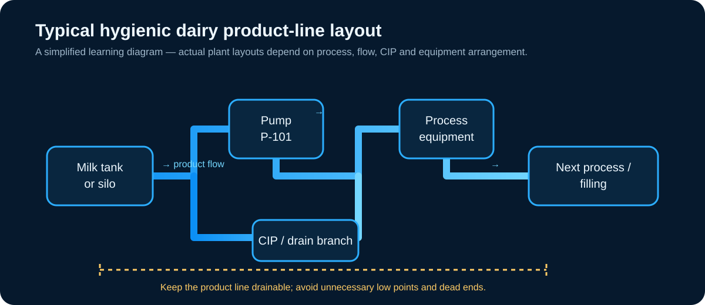
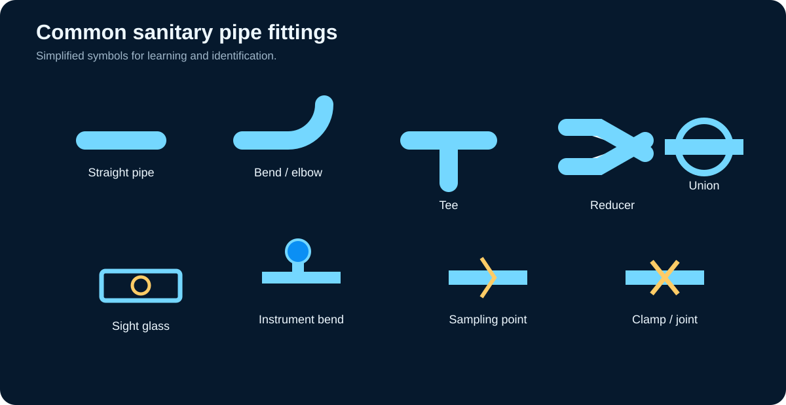
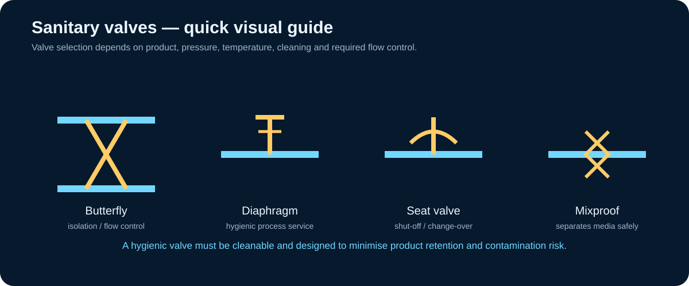
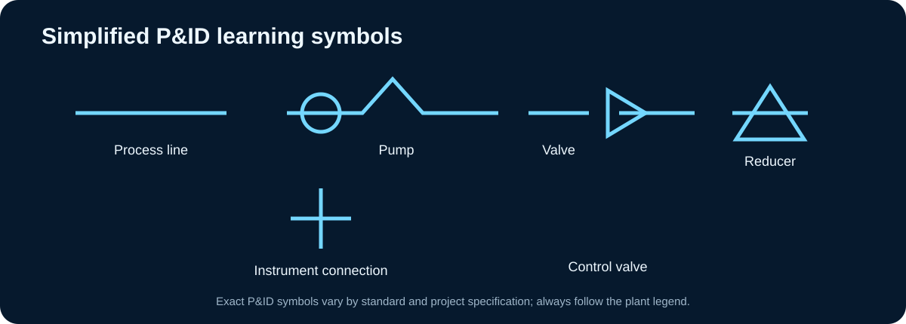

Pipes & Fittings
A practical, visual guide to sanitary dairy piping — from pipe materials and dimensions to fittings, unions, valves, gaskets, supports, drainability, P&IDs and maintenance.

1. What is a dairy piping system?
Piping is the network that carries milk, cream, cultured products, water, steam, cleaning solutions, coolant and compressed air between different parts of a dairy plant. Product-contact piping has stricter hygienic requirements because its internal surfaces directly contact the food.
Product lines
Carry milk and milk products between tanks, pumps, separators, pasteurizers, homogenizers, fillers and other process equipment.
Service lines
Carry utilities such as water, steam, coolant and compressed air. Their materials and design can differ from product lines.
Drain / waste lines
Remove CIP solutions, rinse water and wastewater. Drainage design is important for sanitation and plant operation.
2. Sanitary piping design requirements
The dairy-engineering notes emphasise smooth, clean surfaces, appropriate stainless steel, suitable sizing, drainability and fittings that do not create difficult-to-clean cavities. Product-contact pipes and fittings are commonly stainless steel grades 304 or 316/316L.
What to look for
- Smooth internal surface
- Clean and free from surface defects
- Minimal product-holding pockets
- Suitable pipe sizing and velocity
- Compatible hygienic fittings
- Good access for inspection and maintenance
- Drainable layout
- Suitable support and thermal movement allowance
Why sanitary design matters
3. Materials of construction
Stainless steel
Primary material for product-contact dairy equipment. AISI 304 and AISI 316 are the two main grades highlighted in the Tetra Pak handbook; 316/316L is commonly selected where greater corrosion resistance is needed.
Glass
Useful where visual inspection is important, including sight glasses and level indications. Because it is brittle, protection and suitable non-splintering construction are important.
Plastic / flexible tubing
Food-grade plastics can be used for selected applications. Temperature resistance, detergent compatibility and interaction with milk fat must be considered.
4. Sanitary pipes and sizing
Sanitary tubing is commonly specified by outside diameter, whereas conventional pipe is often designated by nominal bore. Wall thickness reduces the available internal diameter, so the actual inside diameter matters in flow calculations.
| Outside diameter | Wall thickness | Approx. carrying capacity |
|---|---|---|
| 25.4 mm | 1.25 mm | < 2,000 kg/h |
| 38.1 mm | 1.25 mm | < 7,200 kg/h |
| 50.8 mm | 1.25 mm | 7,200–15,000 kg/h |
| 63.5 mm | 1.5 mm | 15,000–22,700 kg/h |
| 76.2 mm | 1.5 mm | 22,700–36,000 kg/h |
The above capacities are the approximate values presented in the supplied Dairy Engineering notes and should be treated as a study reference rather than a universal design table.
For engineering selection, choose a diameter that meets the required flow without excessive pressure loss, while considering product viscosity, allowable velocity, pump characteristics, cleaning requirements and cost. Oversizing increases installation cost; undersizing increases pressure drop.
5. Pipe fittings
Fittings change direction, branch the line, change diameter, provide disconnection, allow inspection or connect instruments and sampling devices. The Tetra Pak handbook lists straight pipes, bends, tees, reducers, unions, sight glasses, instrument bends, valves and supports as part of the product pipe system.

Bend / elbow
Changes flow direction. Smooth sanitary bends are preferred to reduce turbulence, pressure loss and difficult-to-clean areas.
Tee
Creates a branch connection. Branch geometry must be hygienically designed to avoid unnecessary product retention.
Reducer
Connects different pipe diameters. Concentric or eccentric geometry is selected according to orientation and drainage requirements.
Union
Provides a detachable connection so equipment, instruments or sections can be removed for cleaning, repair or replacement.
Sight glass
Allows visual checking of the product where observation is required.
Instrument connection
Provides a hygienic location for instruments such as thermometers and gauges. The handbook notes that the sensor should be directed against the flow for accurate readings.
6. Pipe connections
Welded joint
Used where a permanent hygienic connection is required. Fewer detachable joints can reduce crevice and cleaning concerns.
Clamp connection
Fast to assemble and disassemble. A gasket provides the seal between the mating surfaces.
Union connection
Useful at equipment and instruments that may need to be removed. The supplied notes stress firm tightening to prevent leakage or air ingress.
7. Valves in dairy piping
Valves may isolate a line or control flow and pressure. In hygienic dairy service, valve selection must also consider cleanability and product retention. The supplied notes distinguish block/isolation valves from throttling/control valves.

Butterfly valve
Commonly used for hygienic isolation and selected flow-control duties because of its compact construction.
Diaphragm valve
Uses a flexible diaphragm and is valued in hygienic process applications where product-contact geometry must be controlled.
Seat valve
Suitable for shut-off, change-over and automated process duties.
Mixproof valve
Designed to keep different media separated at complex junctions; leakage between isolated circuits is directed safely away rather than mixing the media.
Check valve
Permits flow in the intended direction and helps prevent reverse flow.
Control valve
Modulates flow or pressure as part of a process-control loop.
8. Gaskets and seals
Gaskets prevent leakage between mating surfaces. Dairy applications require resistance to milk fat, detergents, sanitizers and the temperature conditions of the process. The supplied Dairy Engineering notes list several commonly used gasket materials and their stated heat-tolerance limits.
| Material | Stated heat tolerance in supplied notes | Typical consideration |
|---|---|---|
| NBR | 130 °C | General gasket applications |
| Butyl | 140 °C | Selected hygienic sealing applications |
| EPDM | 165 °C | Good choice for many hot-water/CIP duties |
| Silicone | 175 °C | Higher-temperature applications |
| Viton | 180 °C | Chemical and temperature resistance considerations |
Important: gasket selection must follow the actual product, temperature, pressure and chemical exposure and the manufacturer's compatibility data.
9. Pipe supports and thermal movement
Pipes should be supported regularly, especially near valves and changes in direction. Stainless-steel support components help avoid external corrosion and galvanic problems; floating supports can accommodate thermal expansion.
Why supports matter
- Prevent sagging and unwanted pipe movement.
- Reduce vibration transfer.
- Maintain intended slope.
- Protect equipment nozzles from excessive loads.
- Allow controlled thermal expansion.
Maintenance clue
Distress cracks near pipe anchors, displaced supports or vibration transferred from equipment can indicate problems with layout or thermal movement.
10. Pipe slope and complete drainage
The supplied Dairy Engineering notes state that line slopes of 0.3–0.5% are sufficient for post-cleaning drainage and gravity flow of low-viscosity fluids.

Do not interpret this as a rule that every plant pipe must be continuously sloped. The layout must consider the function of the line, pressure-driven flow, equipment connections, CIP strategy and drain points. The objective is to prevent unintended pockets and provide the drainage required by the process.
11. P&ID and piping drawings
A Piping and Instrument Diagram (P&ID) identifies process equipment, pipes, valves, pumps, fittings, instruments and control loops. The supplied Dairy Engineering notes say pipe size/material, valve identification, ancillary fittings, pumps and control instruments should be represented, while detailed physical routing is generally shown on a piping isometric drawing.

P&ID
Answers: what is connected to what? It is primarily a process and instrumentation representation.
Piping isometric
Answers: where and how is the pipe physically routed? It communicates the spatial arrangement in greater detail.
12. Installation and layout principles
13. Maintenance & common problems
Routine checks
- Inspect gaskets for brittleness, deformation and wear.
- Check clamps/unions for proper condition and tightness.
- Inspect pipe supports and anchors.
- Look for vibration, movement and thermal-stress signs.
- Check modifications after equipment relocation or expansion.
- Confirm instruments remain correctly positioned and hygienically connected.
Common symptoms
- Leak: inspect gasket, joint alignment and tightening.
- High pressure drop: check undersized pipe, excessive fittings, deposits and valve position.
- Air ingress: inspect suction-side joints and pump installation.
- Poor drainage: check slope, low points and blocked drains.
- Contamination: investigate dead ends, pockets, damaged surfaces and cleaning effectiveness.
14. Quick revision sheet
| Topic | Remember |
|---|---|
| Product-contact material | Stainless steel is the principal sanitary material; AISI 304 and 316/316L are key grades. |
| Pipe sizing | Balance flow, velocity, pressure loss, cost, viscosity and cleaning requirements. |
| Connections | Welded for permanent joints; clamp/union where disassembly is required. |
| Valves | Isolation and control are different duties; hygienic cleanability is essential. |
| Gaskets | Must match product, temperature, pressure and cleaning chemicals. |
| Drainage | Supplied notes: 0.3–0.5% slope for post-cleaning drainage and low-viscosity gravity flow. |
| P&ID | Shows equipment, piping, valves, instruments and control loops. |
15. Test yourself
Ready to check your understanding? Try the dedicated Pipes & Fittings quiz.
Start Pipes & Fittings Quiz →Source & study note
This learning page is based primarily on the supplied Dairy Engineering notes, the supplied DTE 212 Sanitory features, Materials, Bottle washer,Tanks notes, and the Dairy Processing Handbook by Tetra Pak. Numerical values and terminology shown here should be used as study material; final plant design should follow the applicable engineering standard, hygienic-design specification and equipment manufacturer's data.